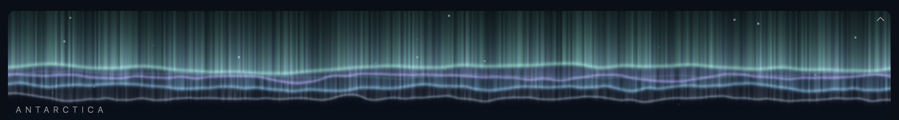
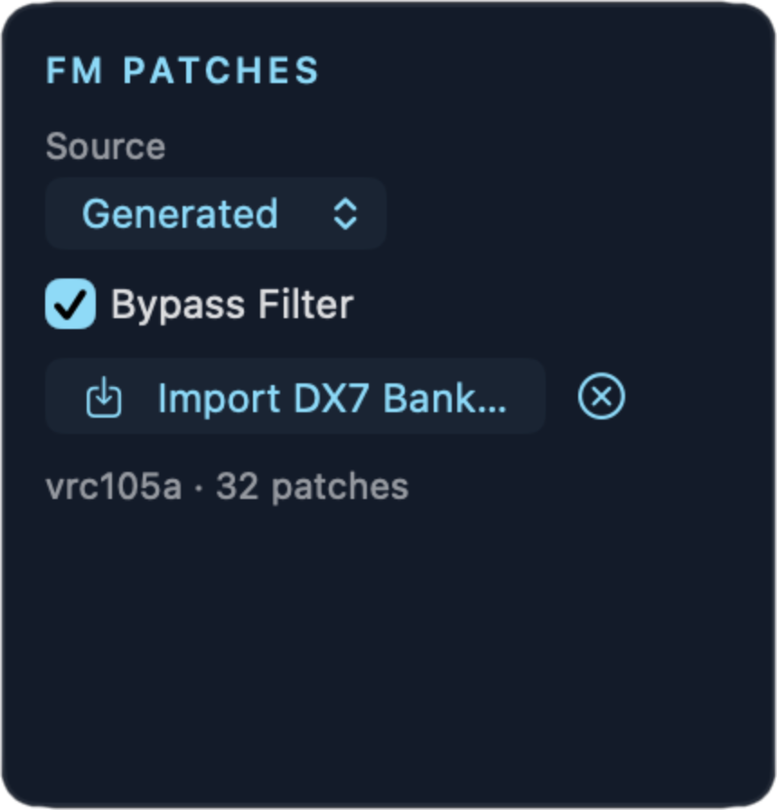
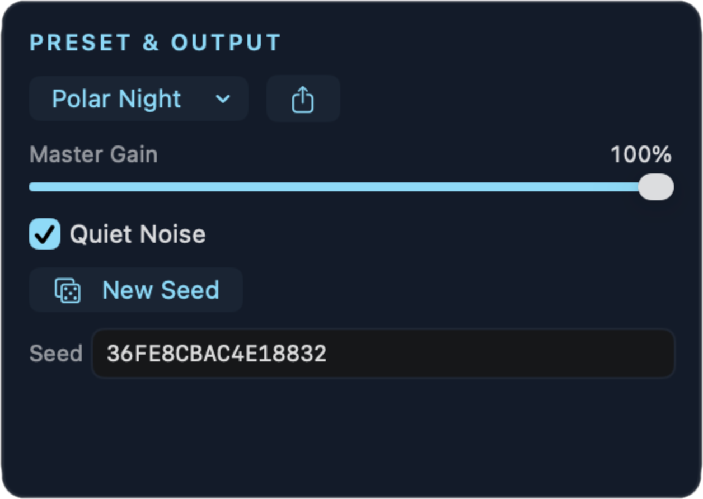
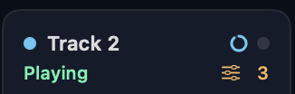
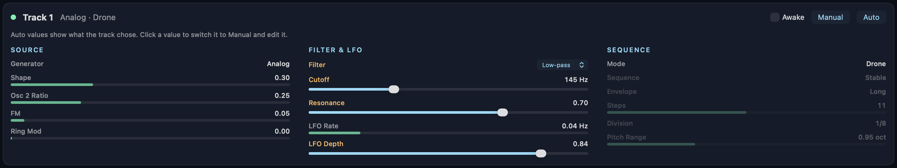
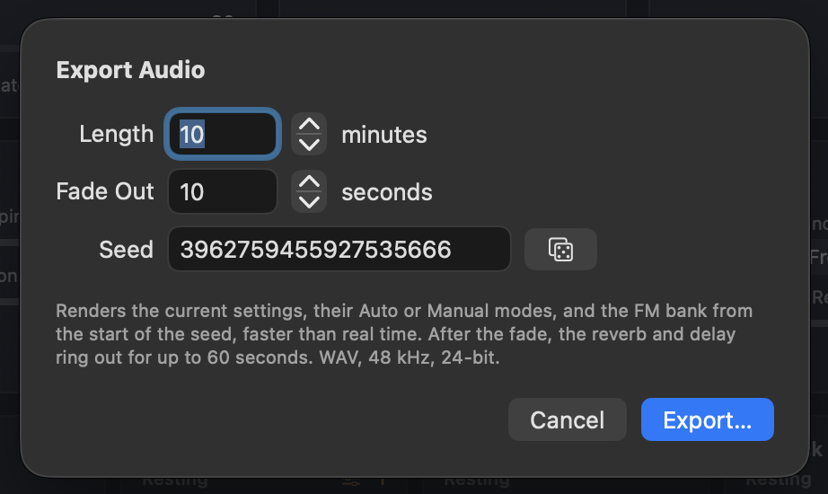

Antarctica User Manual
Antarctica is available as both a standalone app and an audio unit plugin (AU) for use in a DAW. The AU is bundled inside the application so there is no installer to run.
Introduction
Antarctica is a generative audio instrument that plays by itself and makes drones, slow melodies, pulses, and strange noises. You provide as much or as little input as you want.
Antarctica has three main components:
- The conductor. It sets the mood for all the tracks.
- Eight audio tracks. Each track makes its own sound, and, guided by the conductor’s mood, decides what to play.
- Two send effects. Reverb and delay units are optimized for maximum spaciness.
You can let Antarctica play with no input forever, or take control of any part of it, at any time.
Quick start
- Open Antarctica.
- Click Play in the toolbar, or push the Space bar.
- Listen. The tracks fade in and start to make decisions.
- To hear a different mood, open the preset menu in Preset & Output and select a factory preset.
- To hear new random choices with the same settings, click New Seed.
- To set the mood yourself, turn off Auto in the Conductor panel then adjust the three sliders.
Basic concepts
Auto and Manual
Each track has two types of parameters:
- Mixer parameters:
- Level
- Pan
- Effects send levels
- Mute and Solo
- Generative parameters:
- Generator type
- Timbral controls
- Filter + filter LFO
- Sequence parameters
In Auto, the track chooses the value. The control shows the value currently playing. In Manual, the track holds your value, and you can edit it.
When you change a parameter from Auto to Manual, Antarctica first copies the current value into the control to prevent the sound from jumping. When you change the parameter back to Auto, the track continues from your value but can make a new choice at its next decision point.
The seed
All the random choices in Antarctica come from one number—the seed. Without user input, the same seed settings always create the same music.
You can use this to:
- Return to a result you like and write down the seed.
- Share a result with a different person, such as giving them the seed and preset.
- Export the same music you heard. See Export audio.
The conductor, tracks, and effects use a different random stream each. Changing one track does not change the choices of the other tracks.
Signal flow
The sends occur after Level and Pan. Mute and Solo also stop the sends.
The window

The window (from top to bottom):
- Aurora: the visualization. Display or hide it.
- Conductor row: Conductor, Tuning, Clock, FM Patches, and Preset & Output.
- Effects row: Reverb and Delay.
- Track strips: one mixer strip for each track.
- Detail panel: the generative parameters of the selected track.
In the standalone app, the toolbar includes Play/Stop, Record, Sleep Timer, and Export Audio.
Hover the pointer over a control to see help text.
Aurora

Aurora gets its name from aurora australis, the southern lights over Antarctica.
Aurora displays the state of the music as undulating lines of light:
- Horizontal ribbons under vertical curtains of light represent the track. Height and brightness show the track level.
- The rays' details display the filter cutoff.
- The shimmer and sway reveal LFO and chaos.
- The curtain color shows the track generator (see table below).
- A pulse moves through the curtain when the track plays a step.
- The conductor mood changes the movement, with dissonant moods shifting the colors toward violet.
| Color | Generator |
|---|---|
| Frost | Noise |
| Green | Analog |
| Cyan | Wavetable |
| Violet | FM |
The track strips and detail panel use the same colors.
To hide Aurora, click the arrow at its top-right corner. Click the arrow again to reveal it.
Conductor

The conductor sets the overall mood of the composition, but doesn't make any sound on its own. It chooses values for each of its three axes, then the tracks use these values to guide their own decisions. The conductor can also adjust the effects (see Motion) and, if you let it, select the tuning.
The three axes
The values of the three conductor sliders impact the system as follows:
| Axis | Low end | High end |
|---|---|---|
| Order ↔ Chaos | Tracks change infrequently. Patterns repeat. LFOs are slow. Shape sequences (Up, Down) are more frequent. | Tracks change frequently and changes are more dramatic. Sequences are random or mutate. LFOs are faster and deeper. Resonance and pitch range increase. |
| Sparse ↔ Busy | Fewer tracks play. More drones and swells. Slow step divisions. Fewer notes in each pattern. | More tracks play. More sequences. Fast step divisions. More notes in each pattern. Brighter filters. |
| Dissonant ↔ Melodic | More Noise tracks. Inharmonic timbres: inharmonic oscillator ratios and wavetable banks, more ring modulation, warp, and feedback. See How the mood shapes the sound. More wrong notes and more detune. Ratio sets with high prime limits. | Consonant timbres. Scale notes and simple ratios. Less detune. More notes on the root. |
Auto mode
Use the Auto switch at the top of the Conductor panel to decide who’s in control.
- Auto on. The conductor moves the axes by itself. The axes show bars, not sliders. Each axis wanders slowly. At random times (from 30 seconds to 3 minutes) the conductor selects a new target mood, and the axes glide to it over some minutes. Sometimes a target is at an extreme end of an axis. This gives slow drift and also clear changes of section.
- Auto off. The axes are sliders. The conductor goes to your values in approximately 0.3 seconds. When you turn Auto off, the sliders start at the values that play now, so the sound does not jump.
Auto Speed (0.25× to 4×) sets how fast the conductor moves in Auto mode. At 0.5×, the moods last twice as long. This control has no effect when Auto is off.
Hold
When you like what you hear and want to keep it going, click the Hold button at the top of the Conductor panel. The button becomes amber.
While Hold is engaged:
- The tracks make no decisions. Each track keeps its sound, pattern, and active or resting state. The track's decision timer stops and becomes amber.
- The conductor stops changing values. Anything affected by the conductor, such as tuning, stops as well.
- The music continues to play. Random and Mutating sequences continue to make new notes and to mutate. Drones, LFOs, and pitch drift continue to move.
- You can edit the tracks, mixer, and effects as usual.
Click Hold again to release it. The conductor and decision timers continue from where they stopped.
Tracks
The Tracks menu (1 to 8) sets how many tracks can play. For example, 4 means that tracks 1–4 play and tracks 5–8 are silent.
- Disabled tracks do not count for Solo.
- Disabled tracks continue to run silently. When you turn a track on again, it continues from its current position.
Antarctica always keeps at least one enabled track playing.
Tuning

| Control | Function |
|---|---|
| System |
Choose one from the pop-up menu.
|
| Scale | For 12-TET:
|
| Ratio Set | For Just:
|
| Root | The root note, from C1 to C5. The default is C3. |
The text at the bottom indicates the active tuning and root note. With System set to Auto, this line shows the conductor’s current selections.
The sequence of the lists above goes approximately from consonant to dissonant.
The controls not applicable to the current tuning mode are hidden. (eg: Ratio Set is hidden when mode is 12-TET.)
In a DAW, a MIDI note sets the root. See Use in a DAW.
Clock
| Control | Function |
|---|---|
| Tempo | 20 to 300 BPM. The step divisions of all the tracks use this tempo. When Antarctica follows a host tempo, this control has no effect. |
| Sync to host | On: use the tempo of the DAW. The standalone app has no host, so it always uses Tempo. |
| Host Transport | How Antarctica follows the play and stop of the DAW. See Use in a DAW. Available only when Sync to host is on. |
The line at the bottom shows the clock currently playing: the internal clock or the host with its tempo and beat.
FM Patches

This panel controls parameters for FM tracks.
| Control | Function |
|---|---|
| Source | Generated (the default): each track makes a new patch when it needs one, for the mood at that time. See Generated patches. Imported: the tracks use patches from the DX7 bank that you import. Both: the tracks use the two types. |
| Bypass Filter | When this checkbox is enabled, FM tracks do not use the track filter. The FM envelopes shape the brightness of the sound, as on a DX7. When this is on, the Filter & LFO section of an FM track is disabled. |
| Import DX7 Bank… | Select a DX7 32-voice bank file (.syx, 4104 bytes). The panel shows the bank name and the number of patches. Click × to remove the bank. |
If you change the Source setting, each FM track changes to a patch of the new type at its next decision point. The current patch continues to play until then.
The imported bank is saved in presets and in your DAW project.
Generated patches
Antarctica does not have a built-in patch bank, nor does it make patches when it starts. An FM track makes a new patch when it needs one:
- When the track changes its sound at a decision point.
- At the next decision after you change Source or import a bank, if the currently playing patch is not of the new type.
If you set the Generator of a track to FM, the track plays its last FM patch again, if that patch is compatible with the Source type. If not, the track makes a new patch.
The conductor mood at the time of patch generation affects the patch sound:
- Melodic moods give simple algorithms and whole-number frequency ratios. The sound is harmonic.
- Dissonant moods give deeper algorithms, inharmonic ratios, more feedback, and sometimes fixed frequencies. The sound is inharmonic and metallic.
- A track that drones or swells gets slow attacks. A track that plays a sequence gets fast attacks.
- A track that plays a sequence may get a bell or mallet patch: Bell, Tubular Bell, Glockenspiel, Vibraphone, or Marimba. Melodic moods give more mallets. Dissonant moods give more bells. The strike is bright, then the sound becomes pure as it rings out. The detail panel shows the name of the patch.
A bell or mallet patch rings for its full length when Envelope is Pluck. Gate and Long stop the ring at the end of the note, as a damper does. The next note stops the ring of the previous note. If the track drones or swells, the patch holds its sound and does not ring out.
Thus a patch fits the mood when it starts. If the mood changes later, the patch does not change until the track makes a new patch.
Antarctica does not save generated patches. The seed controls them, so the same seed and the same settings give the same patches again. To keep the currently playing patch, set the track Generator to Manual.
Preset & Output

| Control | Function |
|---|---|
| Preset menu | Shows the name of the current preset. Open it to load a factory or user preset, to save (Save As…), or to delete the current user preset. See Presets. |
| Share | Shares the current settings as an .aupreset file. |
| Master Gain | Master output level. |
| Quiet Noise | Noise can be loud and bright. When this is on, a track using the Noise generator applies a 2 kHz low-pass filter and reduces the overall gain. The LFO continues to move the cutoff. If you set the filter to Manual, your values are used. |
| Dynamic EQ | Some sounds have a strong, narrow peak between about 1 kHz and 4.5 kHz, for example a resonant filter or a loud FM partial. The ear is very sensitive in this range, so these peaks can sound piercing. When this is on (the default), the output reduces a peak by up to 18 dB, only while it is louder than the frequencies next to it. A peak that is also a large part of the full sound gets more reduction. Flat, bright, dark or quiet sounds do not change. This setting is not saved in presets. It does apply to audio export. |
| New Seed | Selects a new random seed. The tracks make new choices and crossfade to them. Your Manual parameter settings do not change. |
| Seed | The current seed, as a 16-digit hexadecimal number. Type a seed and push Return to reset all settings to their defaults and start again from that seed. |
Effects

Each track sends to the two effects with its Rev and Dly controls. The Return control of each effect sets how much of the effect you hear in the output.
Reverb
A very large, diffuse reverb. It can make spaces that are larger than real rooms, and decays of more than a minute.
| Control | Function |
|---|---|
| Freeze | Holds the reverb tail with no loss, and stops new input. Use it to make a pad from the current sound. |
| Return | The reverb level in the output. |
| Size | The size of the space. |
| Decay | The decay time, from 0.5 to 100 seconds. |
| Damping | How fast the high frequencies decay. More damping gives a darker tail. |
| Modulation | Slow movement in the tail. It makes the tail less metallic, and it adds a small chorus. |
| Pre-delay | The time before the reverb starts, from 0 to 500 ms. |
| Low Cut | Removes low frequencies from the reverb, from 20 Hz to 1 kHz. This helps to prevent drones from becoming muddy. |
| Motion | How much the conductor can move the reverb. Sparse moods make the decay longer (up to twice as long). Chaos adds modulation. At 0, the conductor does not affect the reverb. |
| Shimmer | Sends part of the reverb tail through pitch shifters and back into the reverb. Each pass moves the sound up by the interval, so the tail climbs in pitch as it decays. More shimmer makes the tail climb faster, and decay sooner. At 0 (the default), the reverb has no shimmer. Freeze stops the shimmer. |
| Interval | The pitch change of each pass: Octave, Fifth, Oct + 5th (an octave and a fifth), or Up + Down (half of the shifters go an octave up and half an octave down, for a thicker sound with less climb). |
The “Adjusted decay” value shows the decay after the conductor changes it.
Delay
A delay with a frequency shifter in its feedback path. With a shift, each repeat moves up or down in frequency, so the repeats spiral.
| Control | Function |
|---|---|
| Mode | Tape: warm repeats with wow, flutter and saturation. BBD: a bucket-brigade delay, with darker repeats and clock noise. |
| Return | The delay level in the output. |
| Time | The delay time, from 5 ms to 2 seconds. Disabled when a tempo sync value is chosen. |
| Sync | Free, or a note value from 1/16 to 1/1 (with triplet “T” and dotted “D” values). The note value uses the tempo. |
| Feedback | How much of each repeat goes back into the delay. Above 1.0, the repeats become louder. Use this with care. |
| Shift | The frequency shift of each repeat, from −200 to +200 Hz. Small values (a few Hz) give slow phasing. Large values give metallic spirals. |
| Age | Tape: more wow and flutter. BBD: more clock noise and darker repeats. |
| Tone | The brightness of the repeats. |
| → Reverb | Sends the delay output into the reverb. |
| Motion | How much the conductor can move the delay. Chaos makes the shift wander (up to ±40 Hz), adds age, and makes the time drift (up to ±6%). At 0, the conductor does not change the delay. |
The text at the bottom shows the delay time and frequency shift values, after the conductor’s changes.
Tracks
Antarctica has eight tracks. Each track outputs one sound at a time. A track can play a drone, a sequence, or slow swells.
Track Decision Engine
Each track has a decision countdown timer. When the timer ends, the track makes a decision, then it starts another timer for a random value from 15 to 120 seconds. Conductor’s Chaos setting makes the times shorter. Hold stops all the timers.
At each decision point, the track makes three choices:
- Play or rest. The track decides whether to play. Busy moods make more tracks play. A track that stops fades out slowly. A track that starts fades in. Chaos makes the fades shorter.
- Sound. The track decides whether to change its sound. Chaos makes a change more probable.
- What to change. When the track decides to change the sound, it selects new values for some or all of the parameters that are set to Auto. Chaos makes it change more of them. It does not change a parameter that is in Manual. At a change, the track can also make a new sequencer pattern, LFO shape or envelope time.
Changing generator, patch or play mode starts a crossfade to the new setting. A change of a continuous value, for example filter cutoff frequency, glides to the new value.
When you edit a track, it starts to play at once, so you can hear the edit.

Track strips

Each track has a strip. Click the top of a strip to select the track and show it in the detail panel. The selected strip has a colored border.
Click the top of the selected strip again to make a decision for the track now. The track selects new values for all of its parameters in Auto, and an FM track gets a new patch. The parameters in Manual do not change. The sound crossfades to the new choices, the track plays, and the decision ring starts again with a new time. This also works while Hold is on, but the decision ring does not move until you release Hold.
| Item | Function |
|---|---|
| Color dot | The generator color of the track. |
| Decision ring | A small ring that counts down to the next decision. Hover the pointer on it to see the time in seconds. When Hold is on, the ring stops and becomes amber. |
| Step light | Blinks when the track plays a note. |
| Status | Playing, Fading in, Fading out, Resting, or Off (above the Tracks count). A resting strip is dim. |
| Lock count | The number of parameters in Manual. |
| Summary | The generator, its type, and the play mode. For a sequence, the current step and the length (for example “Sequence 3/11”). |
| Meter | The output level of the track. |
| Level, Pan | The track level and stereo position. |
| Rev, Dly | The sends to the reverb and the delay. |
| M | Mute. Mute has priority over Solo. |
| S | Solo. When one or more tracks are soloed, you hear only the soloed tracks. Option-click: solo only this track. Command-click: remove the solo from all tracks. |
Change all tracks at the same time
- Shift-drag a Level, Pan, Rev or Dly slider: all tracks go to the same value.
- Option-Shift-drag: all tracks move by the same amount from their current values.
Detail panel

The detail panel shows the generative parameters of the selected track, in three sections: Source, Filter & LFO and Sequence.
- A parameter in Auto has a gray name and a thin bar or a text value. It shows what the track plays now.
- Click the name or the bar to change the parameter to Manual. The name becomes amber, and a slider or a menu shows. Edit the value.
- Click the amber name to change the parameter back to Auto.
At the top of the panel:
| Control | Function |
|---|---|
| Awake | The track never rests. The conductor cannot fade it out. |
| Manual | Changes all the parameters of the track to Manual. The track keeps its current sound. |
| Auto | Changes all the parameters of the track to Auto. |
Some parameters have no effect in some modes. These show dim. For example, the Sequence section is dim for a drone.
Source
Generator selects the sound engine: Noise, Analog, Wavetable or FM. The four Timbre parameters (A–D) have different functions for each generator. The detail panel shows the correct names for the generator that plays now.
How the mood shapes the sound
At a decision, a track can select new Timbre values. The Dissonant ↔ Melodic axis at that time weights the choice. Each slot has the same rule for all generators:
| Timbre | Melodic | Dissonant |
|---|---|---|
| A | The mood has no effect. The value is random. | |
| B | Usually in the lower half: less crackle, consonant ratios, harmonic banks. | Usually in the upper half: more crackle, inharmonic ratios and banks. |
| C | Low values only. | The values can be high: more FM, scan and feedback. |
| D | Usually 0. | Used more frequently, with larger values: more ring modulation and warp, faster FM envelopes. |
A dissonant mood also selects the Noise generator more frequently. An FM track also gets a new patch for the mood. See Generated patches.
The values fit the mood at the time of the decision. They do not follow the mood between decisions. At each decision, a track changes only some of its parameters, and more of them when the mood is chaotic. Thus a track can keep a timbre from an earlier mood for some decisions.
Noise
| Timbre | Function |
|---|---|
| A: Color | White (0), pink (0.5), brown (1). |
| B: Crackle | From continuous noise (0) to only sparse clicks and pops (1). |
| C, D | Not used. |
Noise has a pitch. The filter follows the note, so the noise can play a melody. See also Quiet Noise in Preset & Output.
Analog
Two oscillators, with FM from oscillator 2 to oscillator 1, and ring modulation.
| Timbre | Function |
|---|---|
| A: Shape | The wave of oscillator 1: triangle → saw → pulse. In Sequence mode, the bottom of the range is the Bleep: a pure sine that becomes a triangle. The summary shows “Analog (Bleep)”. |
| B: Osc 2 Ratio | The frequency of oscillator 2. The lower half gives consonant ratios. The upper half gives inharmonic ratios. |
| C: FM | How much oscillator 2 modulates the frequency of oscillator 1. |
| D: Ring Mod | The level of ring modulation. |
Wavetable
Each bank has 16 frames that morph from one spectrum to another.
| Timbre | Function |
|---|---|
| A: Position | The frame in the bank. |
| B: Table | The bank. The lower half has harmonic banks: Classic, Formant, Organ, Pulse Sweep. The upper half has inharmonic banks: Stretched, Compressed, Bells, Clusters. |
| C: Scan | How far the position moves back and forth by itself. |
| D: Warp | Bends the wave for a brighter, harder sound. |
FM
A six-operator FM voice, as on a DX7. The patch comes from the FM Patches panel. When the track selects a new generator, it gets a new patch. To keep a patch, set Generator to Manual.
| Timbre | Function |
|---|---|
| A: Mod Depth | The level of the modulators. More depth gives a brighter sound. |
| B: Inharmonic | In the upper half, the operator ratios move away from whole numbers. This gives bell and metal sounds. |
| C: Feedback | More operator feedback. This makes the sound rougher. |
| D: EG Speed | Makes the operator envelopes faster, up to eight times. |
Filter & LFO
Each track has a filter after its generator, and an LFO that moves the cutoff. Each LFO is free-running. The LFOs of the tracks do not synchronize with each other.
| Parameter | Function |
|---|---|
| Filter | Low-pass or High-pass. |
| Cutoff | The cutoff frequency, from 20 Hz to 16 kHz. |
| Resonance | The peak at the cutoff frequency. |
| LFO Rate | From 0.01 Hz (100 seconds for one cycle) to 12 Hz. |
| LFO Depth | How far the LFO moves the cutoff. |
At each change, the track also selects an LFO shape (sine, triangle, sample and hold, or smooth random) and how much each note opens the filter. You cannot see these choices.
Sequence
| Parameter | Function |
|---|---|
| Mode | Drone: one long note with 2–3 slightly detuned voices. It moves to a new note only at a change. Sequence: a step sequence. Swell: slow notes at random times, one at a time, with long attack and release. |
| Sequence | The type of pattern. See the table below. |
| Envelope | The shape of each sequence note. Pluck: a fast attack, then a decay. Gate: the note holds for 1/4, 1/2, 3/4 or all of the step (a different length for each step of the pattern), then releases. Long: as Gate, with a longer release. |
| Steps | The length of the pattern, from 5 to 17 steps. |
| Division | The length of each step: 1/1, 1/2, 1/4, 1/8, 1/8T (triplet), 1/16, 1/16Q (quintuplet), 1/16T, 1/32. |
| Pitch Range | How far the notes go above the base note, from 0 to 3 octaves. At 0, all notes are on one pitch. |
Sequence, Envelope, Steps and Division have no effect in Drone and Swell. Pitch Range has no effect in Drone.
Sequence types
| Type | Function |
|---|---|
| Random | A new random note at each step. There is no pattern. |
| Stable | A random pattern that repeats. |
| Mutating | A random pattern that changes a little at the end of some cycles: a step changes, or the pattern gets or loses a step. |
| Up/Down | The notes go up, then down, across the pitch range. |
| Up | The notes go up across the pitch range, then start again. |
| Down | The notes go down across the pitch range, then start again. |
| On 1 | Only step 1 plays. The other steps are rests. This gives a slow, regular pulse. |
Some steps in a pattern are rests. Busy moods give fewer rests. The first step always plays.
Presets
A preset keeps all the settings, the Auto or Manual state of each parameter, the seed, and the imported DX7 bank.
Factory presets
| Preset | Description |
|---|---|
| Init | A calm, melodic start, with large sends to both effects. Quiet Noise and FM Bypass Filter are on. |
| Polar Night | Slow and dark. Just intonation (Harmonics 8–16) on a low root, 60 BPM, and a very large reverb with a 40-second decay. |
| Ice Shelf Choir | Organ wavetable drones on tracks 1–4, in D Dorian (12-TET), with a large reverb. |
| Katabatic Wind | Noise on tracks 1–5, a chaotic and dissonant mood, and a BBD delay with a small shift. |
| Aurora Sequence | Busy and melodic sequences in Major Pentatonic at 100 BPM, with a dotted 1/8 delay. |
| Station Signals | FM on tracks 1–4 (tracks 1–2 in Sequence), with a 1/4 BBD delay. Like radio signals from far away. |
| Crevasse | Chaotic, busy and dissonant. FM on tracks 1–3, 13-limit just intonation, a shifting delay and a lot of motion. |
| Whiteout | The extreme: full chaos, full density, full dissonance, with Auto off. A 60-second reverb and a delay that spirals up. |
A factory preset sets its values and resets all other settings to their defaults.
User presets
- Save. Open the preset menu and select Save As…. Type a name, then click Save.
- Load. Select the preset in the User section of the preset menu.
- Delete. Load the preset, then select Delete in the preset menu. You cannot delete a factory preset.
- Share. Click the Share button to send the current settings as an
.aupresetfile. - Import. Drag an
.aupresetfile onto the Antarctica window. Antarctica adds it to your user presets and loads it.
User presets are in ~/Library/Audio/Presets/Cluttered/Antarctica. The app and the Audio Unit use the same presets.
Record
The standalone app can record what you hear to a WAV file (24-bit, stereo, at the sample rate of your audio output). The recording is in real time, and it includes all the changes that you make while it records.
- Click Record in the toolbar, or push ⌘R. The recording starts immediately. If Antarctica is stopped, it also starts to play.
- While Antarctica records, the Record button is red and the toolbar shows the recording time.
- To stop the recording, click Record again or push ⌘R. Antarctica continues to play. If you click Stop, the recording also stops.
At the end, the recording fades out in 50 ms, so it does not stop with a click.
Antarctica saves the recordings in ~/Music/Antarctica Recordings. Each file gets the date and time when it started, for example Antarctica Output 2026-09-26 at 3.04.12 PM.wav. The time uses the format of your region. The name has periods, not colons, because Finder shows a colon as a slash. macOS screenshots use the same pattern.
Change the recordings folder

- Choose Antarctica ▸ Settings… (⌘,).
- Click Choose…, then select a folder.
Click Show in Finder to see the folder. Click Use Default to go back to ~/Music/Antarctica Recordings. If the folder does not exist, Antarctica makes it.
To record a specified length from the start of a seed, faster than real time, use Export audio instead.
Sleep timer
The standalone app can stop the playback after a time that you set. Before it stops, the sound fades out slowly.
- Click the Sleep Timer button (the timer icon) in the toolbar.
- Type the number of minutes, then click Start. If Antarctica is stopped, it also starts to play.
- While the timer runs, the toolbar shows the time that remains.
The fade starts when 10% of the time remains. For example, a 60-minute timer fades out during the last 6 minutes. When the fade gets to silence, the playback stops.
To cancel the timer, click the time in the toolbar. The volume goes back to full, and Antarctica continues to play. If you click Stop, the timer also stops.
Export audio

The standalone app can write the music to a WAV file (48 kHz, 24-bit, stereo). The export is much faster than real time.
- Choose File ▸ Export Audio… (⌘E), or click the Export button in the toolbar.
- Set Length (1 to 600 minutes) and Fade Out (0 to 60 seconds).
- Set Seed. It starts with the current seed. Click the dice to select a new one.
- Click Export…, then select a file name and a folder.
- Wait for the progress bar. Click Cancel to stop. A canceled export deletes its file.
- Click Show in Finder to see the file.
The export starts from the beginning of the seed. It uses the current settings, the Auto and Manual states and the FM bank. It does not include the changes that you made while you listened. The playback continues during the export and does not change.
After the fade, the reverb and the delay continue to ring for up to 60 seconds. The export stops when the output is silent.
Use in a DAW
Antarctica is also an Audio Unit instrument. In your DAW, add it to an instrument track. It shows as Cluttered: Antarctica. The Audio Unit has the same window as the app, but no toolbar.
Tempo and transport
Turn on Sync to host in the Clock panel to use the tempo of the DAW. Then set Host Transport:
| Mode | Function |
|---|---|
| Free | Antarctica uses only the tempo of the host. It plays all the time, also when the host is stopped. |
| Align | When the host starts or jumps to a new position, the steps of all tracks move to the beats of the host. |
| Play/Stop | The default. As Align, and Antarctica plays only while the host plays. At each start, it restarts from the seed, so the same play gives the same music. |
MIDI
Antarctica does not need MIDI. When it gets a MIDI note, that note becomes the root. The root does not change back when the note stops.
Automation
The DAW can automate all parameters, in groups: Global, Conductor, Reverb, Delay, and Track 1–8. An automated generative parameter has an effect only when it is in Manual.
Shortcuts
| Keys | Action |
|---|---|
| Space | Play or stop (standalone app) |
| ⌘R | Start or stop a recording (standalone app) |
| ⌘E | Export Audio… (standalone app) |
| ⌘, | Settings (standalone app) |
| Option-click S | Solo only this track |
| Command-click S | Remove the solo from all tracks |
| Shift-drag a mixer slider | Set all tracks to the same value |
| Option-Shift-drag a mixer slider | Move all tracks by the same amount |
Tips
- A calm background for many hours. Turn Auto on, set Auto Speed to 0.5×, keep Chaos low, and set Tracks to 3 or 4.
- Keep the moment that you hear now. Click Hold. Nothing changes until you release it.
- Keep a sound that you like. Select the track and click Manual. The track keeps its sound, and the other tracks continue to change.
- Keep only the type of sound. Set only Generator to Manual. The track keeps the generator (and its FM patch or wavetable bank), and continues to change its filter and sequence.
- One track always present. Turn on Awake for a drone track, so the music always has a floor.
- Music to fall asleep to. Use the calm background settings above, then start a sleep timer.
- Noise is too loud. Turn on Quiet Noise.
- A sound is piercing or harsh. Make sure that Dynamic EQ is on. If the sound continues to be harsh, decrease the Resonance or the Cutoff of the track.
- A pad from the current moment. Turn on reverb Freeze, then mute some tracks.
- A stable effect sound. Set reverb and delay Motion to 0.
- Different music from the same settings. Click New Seed.